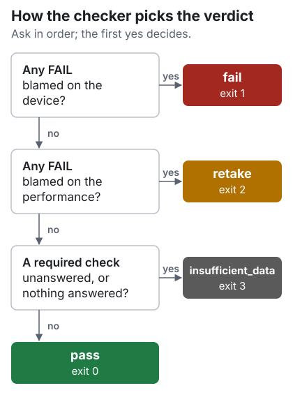

Device Conformance Testing#
You have integrated a device that publishes hand poses into Isaac Capture. The Conformance Test Suite (CTS) produces the evidence that the integration works: you record one scripted take, a checker reads only that recording and returns a verdict, and you send the take through the submission form for your pull request. This page explains the process, the hand suite and what a verdict means.
How it works#
Your device feeds Isaac Capture’s hand tracker, through your plugin or the headset’s own tracking.
Build with Python 3.12, create the tool environments, connect the headset.
Practice the script until the performer knows every step.
Record one scripted take in the capture panel in your browser.
The checker reads the take and returns one verdict.
Package the take with its report and send it through the submission form.
The hand suite#
For: gloves, or a headset’s own optical hand tracking
Records:
core.HandPoseRecord, 26 OpenXR joints per hand, 21 of them judgedScript: 11 gestures, seated at a table, about 2 minutes
Pacing: automatic; a spoken cue, a count-in, a beep, then a timed hold
What the checker looks at#
Area |
What it asks |
Examples |
|---|---|---|
Signal and timing |
Is the stream well formed and steady? |
Finite values, unit quaternions, monotonic timestamps, frame rate and gaps, joint speed |
Skeleton geometry |
Is it a plausible human skeleton, in metres? |
Units, bone lengths that stay constant, human proportions, joints in their named slots, handedness |
Placement and frames |
Are the joints where the body is, in the frame they claim? |
Not parked at the origin, wrist not frozen, quaternion component order, positions and orientations that agree |
Poses over the scripted steps |
Did each step happen, in order, as labelled? |
Hands flat on a level table, fist closure, pinch finger identity, palms together, fingertip contact through the rolls |
The checker needs only the mcap and flatbuffers Python packages. It is deterministic, so
we re-run it on your take and get the same verdict. Some checks are only measured and reported;
the suite page says which.
Verdicts#


Verdict |
Exit status |
Meaning |
What to do |
|---|---|---|---|
|
0 |
Nothing in the recording argues against the integration. |
Submit it. |
|
1 |
A failure blamed on the device or its plugin. |
Fix the integration and record again, or submit with an explanation. |
|
2 |
The take is unusable because of how it was performed. The device is not implicated. |
Rehearse the failed step and record again. |
|
3 |
The recording cannot answer the question: too short, no channel, or a required check could not run. |
Check that the device streamed on its channel for the whole take, then record again. |
(none) |
4 |
The check could not run: a usage error, an unknown check, or a recording or labels file that cannot be read. |
Fix the command or the file named in the error, then run the check again. |
A take checked without its labels file still gets a verdict, even pass, but every step check
reads n/a: keep the labels file beside the recording. You can submit any verdict with its
report.
Marks in the report
pass: answered, and the answer is acceptable.FAIL: answered, and the answer is not. Whom the check blames decidesfailorretake.meas: measured and reported, not judged. Read the value; it is not an approval.n/a: not answered, because data was missing or a check it depends on failed. Never a pass.note: an advisory check failed. Reported; it does not move the verdict.
What you need#
A Linux workstation with the repository built for Python 3.12.
An XR headset connected through CloudXR, even when your device produces the joints.
Your device’s plugin built and installed, if it has one.
aplay(alsa-utils) for the spoken cues. Without it, or without speakers, the capture panel’s on-screen cues still guide every step.A table and a chair for the script, and ideally a second person at the screen.
A Google account to sign in to the submission form.
Start with Set Up the Tools.